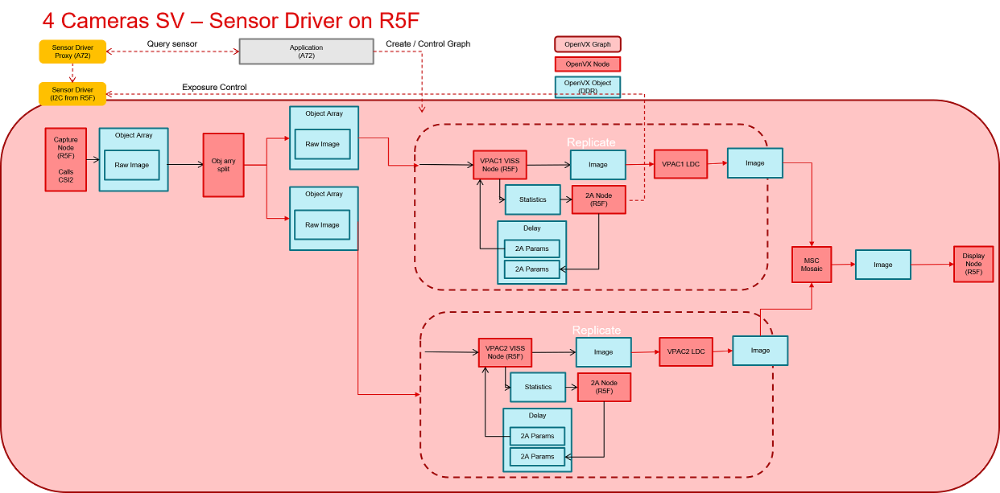

Introduction
This application demonstrates the use of VISS node and TI's 2A (AE & AWB) algorithm in multi-channel mode. The dataflow is
- Configure image sensors using sensor driver f/w APIs
- Acquire RAW images from camera sensors
- Process the images on VISS
- Run AE (Auto Exposure) and AWB (AutoWhiteBalance) algorithms, using H3A output from VISS
- Run LDC on the output of VISS
- Scale LDC output using MSC and arrange in a mosaic
- Display the mosaic using Display Sub-System
Any number of cameras from 1-8 (up to 12 with J784S4 + Fusion2 board) can be selected by the user, subject to constraints of sensor driver. The application assumes that all cameras are identical.
Supported plaforms
| Platform | Linux x86_64 | Linux+RTOS mode | QNX+RTOS mode | SoC |
| Support | NO | YES | YES | J721e / J721S2 / J722S / J784S4 / J742S2 |
Data flow (RAW12 input)
If running on J784S4, there is an option to split the graph into 2 separate pipelines which get merged together at the mosaic node. This allows the graph to utilize both VPAC's that are present on J784S4. This option is enabled by default on J784S4, but can be disabled by setting the "bypass_split_graph" to "1" in the config file. The diagram for this configuration can be seen below:

Steps to run the application on J7 EVM (Linux + RTOS mode)
- Build the application and related libraries as mentioned in Build Instructions for Linux+RTOS mode
- Connect up to 8 D3-IMX390 RCM camera modules to cam0 - cam7 ports of the Fusion1 board.
- For J784S4 + Fusion2 board, connect up to 12 D3-IMX390 RCM camera modules to cam0 - cam11 ports.
- See Fusion1 Board setup
- See Fusion2 Board setup
- Use the is_interactive flag to run the demo in an interactive mode which allows the user to print performance characteristics on the UART console.
- Run the app as shown below
cd /opt/vision_apps
source ./vision_apps_init.sh
./run_app_multi_cam.sh
- The processed output for one of the captured channel is displayed through DSS on HDMI or eDP display - Display interface selection through compile time setting in the file platform/j784s4/rtos/common/app_cfg_mcu2_0.h
- See Vision Apps Datasheet for performance of 8 camera system
- Note
- A single UB9702 deserializer (Fusion2) can handle 2x IMX728. To run 4x IMX728, 2x deserializers need to be used with 2x IMX728 on each deserializer.
- To run multi-cam on non-sequential ports, run in non-interactive mode.
- Modify
app_multi_cam.cfg file in /opt/vision_apps to run IMX728 on ports 0, 1, 4, and 5: sensor_index 4
channel_mask 51
num_frames_to_run 1000
is_interactive 0
- Save app_multi_cam.cfg file and run
./run_app_multi_cam.sh
Steps to run the application on J7 EVM (QNX + RTOS mode)
- Build the application and related libraries as mentioned in Build Instructions for QNX+RTOS mode
- Connect up to 8 D3-IMX390 RCM camera modules to cam0 - cam7 ports of the Fusion1 board.
- For J784S4 + Fusion2 board, connect up to 12 D3-IMX390 RCM camera modules to cam0 - cam11 ports.
- See Fusion1 Board setup
- See Fusion2 Board setup
- Use the is_interactive flag to run the demo in an interactive mode which allows the user to print performance characteristics on the UART console.
- In the case of J784S4, use the bypass_split_graph flag to determine whether or not to use both VPAC's available on J784S4. The split configuration mode splits the output from the capture node into 2 parallel pipelines running on each VPAC instance. The pipelines merge together in the mosaic node and are rendered onto the display using the display node. For other SoC's, this configuration is also enabled by default, but it will only execute on a single VPAC.
- Run the app as shown below
cd /ti_fs/vision_apps
. ./vision_apps_init.sh
./run_app_multi_cam.sh
- The processed output for one of the captured channel is displayed through DSS on HDMI or eDP display - Display interface selection through compile time setting in the file platform/j784s4/rtos/common/app_cfg_mcu2_0.h
- See Vision Apps Datasheet for performance of 8 camera system


 1.8.14
1.8.14